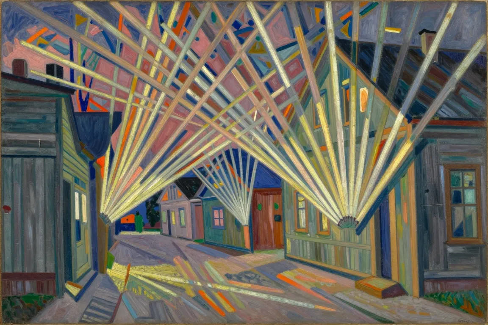

Картины из линий, которые обозначают лучи света, отражённые предметами. Лучи пересекаются в резких цветных пучках, а предмет рассыпается веером линий в кубистско-футуристическом пространстве.

Главная идея
То, что видит глаз, есть сумма лучей света, отражённых предметами, поэтому художник рисует пересечение лучей, а не предметы.
Принципы дизайна
Рисуйте лучи прямыми узкими линиями 3–15 мм, веером или пучком, пересекающим картину.
Пересекайте лучи под 10–45° и пусть форма возникает там, где сходятся два и больше луча.
Ставьте линии лучей контрастными цветами, тёплый против холодного, на фоне разорванного цвета.
Разбивайте предмет на 8–20 осколков с острым краем и держите осколки в движении вдоль лучей.
Держите пространство плоским, в 2–3 слоя перекрывающихся пучков, и избегайте точки схода.
Показывайте немного сюжета, например лес, улицу или рыбу, чтобы глаз находил его в пучках.
Пишите сухим быстрым мазком, чтобы у пучков был растушёванный край.